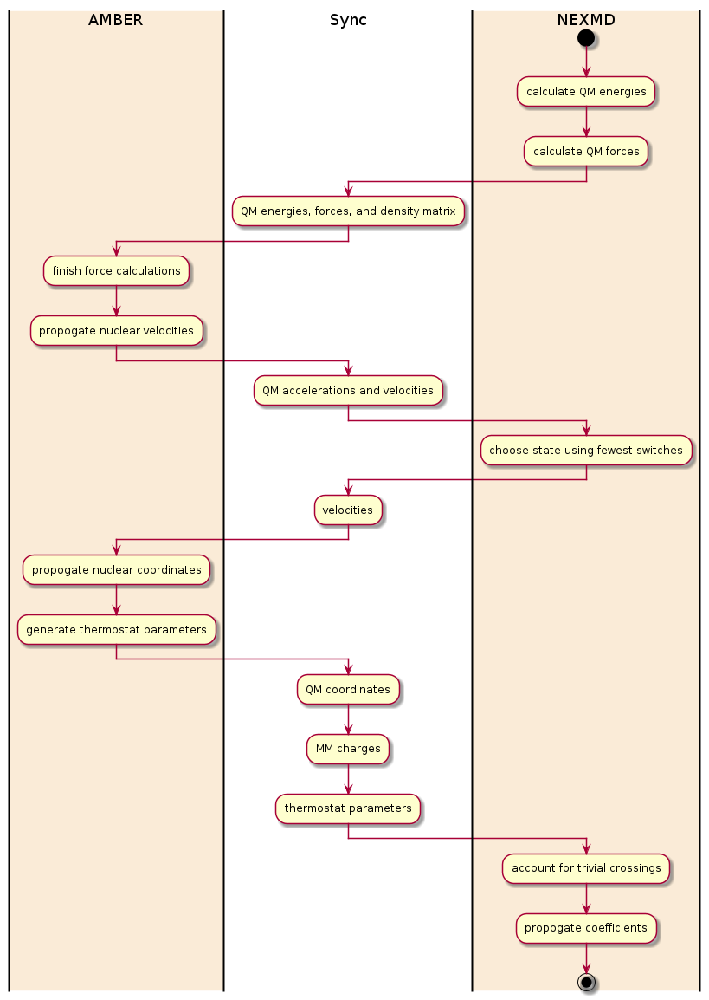
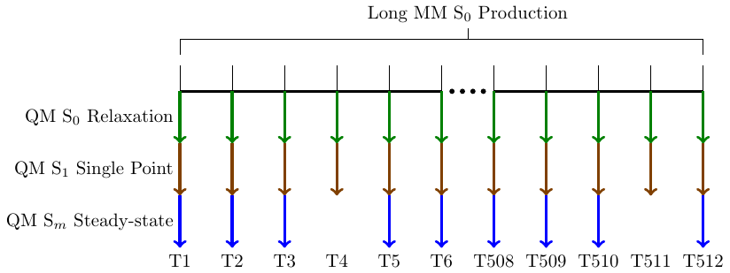
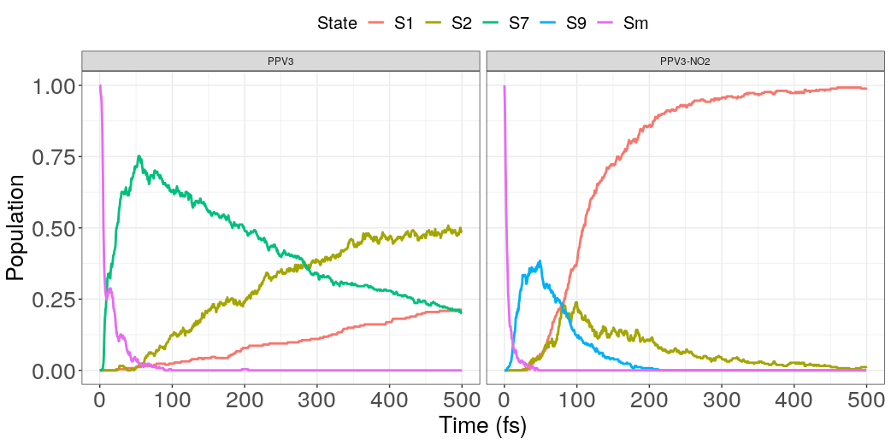
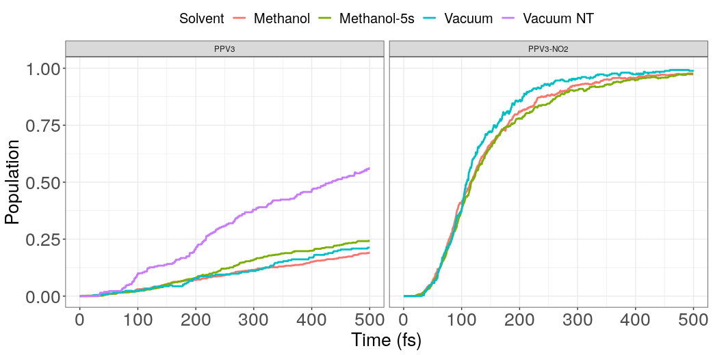
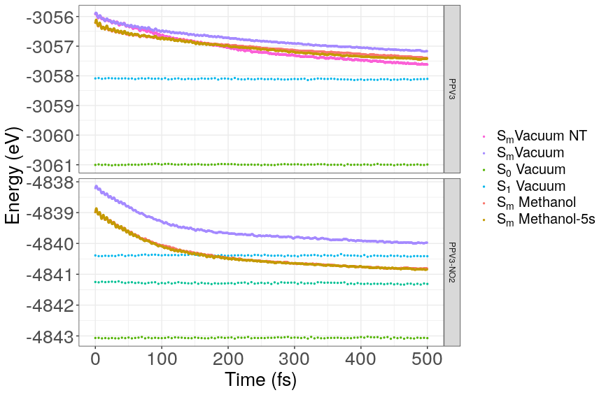
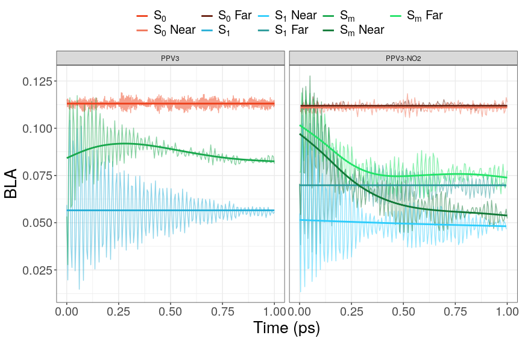
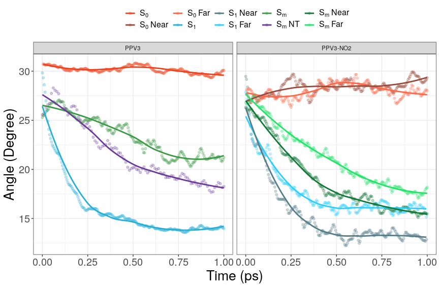

Paper 2
Table of Contents
- Introduction
- Theoretical Methodology
- Computational Design
- Shown in figure ref:scheme:nasqm is a scheme describing a common timestep that occurs within the SANDER-NEXMD inferface
- Starts from Amber
- Amber sends the QM coordinates and thermostat to NEXMD
- Calculates the energies using DFT or other semi-empirical methods such as AM1
- Account for trivial crossings
- Calculate QM Forces
- Finish Force Calculations
- Propogate nuclear velocities
- Fewest Switches
- With the new state chosen, AMBER now uses the average velocities to propagate the nuclear coordinates.
- New random numbers are generated for the thermostats when appropriate
- Computational Timings
- Simulation Methods
- Simulation Results
- How many Data points were available.
- State Populations
- Potential Energies
- Bond Length Adjustment
- Dihedral Angles
- Why do we want to do dihedral angels?
- Description of the plot
- Inital Dihedral angle for Sm is lower than ground state
- Dihedral relaxation of S1 may be slightly faster in ppv3-no2
- Dihedral relaxation of Sm significantly faster in ppv3-no2
- Dihedral relaxation without accounting for trivial crossings is slower
- Separation of the of the near and far Sm, before S1
- Dihedral splits with ppv3-no2
- Wiberg Bond Analysis
- Bibliography
- Papers To Read
Introduction
Because there's such a strong coupling between the vibration excite Electronics states of freedom mechanic molecules we must take into account not a tea bag Dynamics in order to produce reasonable simulations. We cannot assume that the nuclear coordinates are significantly slower than that of the electrons
This type of research we have a ground thing above the ground state dim sleep populated manifold of excited States state board often swapping energy in other words the energy of one state at will be higher than another state at one point then at a later time the energy of that first date could be visited the energy of the other ones so we must all think you track of the order of the states. As a general rule we also need to be solving the structure ecrater the creation on the Fly for each electronic level . Calculating the potential energy surfaces for all these dates is quite complex and requires solutions to the shrinker equation the backend methods used to calculate these put the Chinese Services can range to externally complicated density functional Theory methods to others much more simplified to me empirical methods effort must be made to balance accuracy to efficiency in this regards.
Hamacas that we're using have a high energy barrier between the ground state in the first excited States which matches up with Kasha’s rule.
The characteristics of this electronic manifold overtime to be very useful to a multiple of different you scenarios such as the residence in which we care deeply about the molecules lowest level excited state or in light harvesting Light-harvesting applications and where the molecule excitation energy is being transferred to charge separation. The study of photosynthesis can also be how to buy this type of research that focuses on the non-radiative crossings The ground state.
Ton of research has gone in the study and he's not on a team that is molecular Dynamics methodologies methodologies range from the extremely complicated inexpensive approaches such as I can figure is time-dependent Arkansas cabin air show for methods and Quantum movies The are quite similar ones such as ehrenfest Theory but the ones that this paper focuses on is specifically the toy surface hopping methodology used with a package, the not adiabatic said America the Dynamics package developed at Los Alamos.
Anon idiopathic excited state Dynamics program has until recently been used only in implicit solvents or an explicit song fence without any type of Nadia body Dynamics only in the excited first excited States. in this paper we propose a method to extend the capabilities of the non adiabatic cold using the Amber package and its ability to do q m m m Dynamics and boxes.
Are focuses on organic conjugated molecule specifically ppv 3 and PPP 2 as shown in the diagram.
Theoretical Methodology
Adiabatic Motion
To find the excited state energies during dynamics, we calculate the Liouville eigenvalue equation
\begin{align*} \hat{\mathbf{\mathcal{L}}}\mathbf{\rho}_{0\alpha} = \Omega\mathbf{\rho}_{0\alpha} \end{align*}with \(\mathbf{\mathcal{L}}\) being the two-particle Louiville operator and \(\Omega\) the energy difference between the \(\alpha\) state and the ground state, where the Liouville operator can be found analytically by
\begin{align*} \hat{\mathbf{\mathcal{L}}}\mathbf{\rho}_{0\alpha} = \left[ \mathbf{F}^{\vec{R}}(\mathbf{\rho}_{00}), \mathbf{\rho}_{0\alpha} \right] + \left[ \mathbf{V}^{\vec{R}}(\mathbf{\rho}_{0\alpha}), \mathbf{\rho}_{00} \right] \end{align*}and the single electron density matrix for each state of the system is described by
\begin{align*} (\mathbf{\rho}_{0\alpha})_{nm} = \left< \psi_{alpha} \right| c_m^\dagger c_n \left| \psi_0 \right>. \end{align*}The excited state inter-qm region gradients are found by adding the transition energies gradients to the ground state gradients, where the transition energy gradients are
The forces are then calculated analytically by the gradient of the ground state energy and the excited state energy.
\begin{align*} \vec{\nabla} E_{\alpha} = \vec{\nabla} E_0 + \vec{\nabla} \Omega_{\alpha} \end{align*}With the gradient of the ground state being calculated by
\begin{align*} \vec{\nabla} E_0 = \frac{1}{2}\mathbf{Tr} \left[ \left( \mathbf{t}^{\vec{R}} + \mathbf{F}^{\vec{R}} \right) \mathbf{\rho}_{00} \right] \end{align*}and the gradient of the excited state being
\begin{align*} \vec{\nabla}\Omega = \mathbf{Tr} \left[ \mathbf{F}^{\vec{R}} (\mathbf{\rho}_{\alpha\alpha} - \mathbf{\rho}_{00})\right] + \mathbf{Tr} \left[\mathbf{V}^{\vec{R}}\mathbf{\rho}_{0\alpha}^\dagger \mathbf{\rho}_{0\alpha} \right] \end{align*}where \(\mathbf{\rho}_{ij}\) represents the density or transition density matrix for states i and j, \( \mathbf{F} \) is the Fock matrix, \( \mathbf{t} \) is the kinetic operator acting on one-electron and \( \mathbf{V} \) is the column interchange operator.
Non-Adiabatic
As each trajectory moves along its potential energy surface, we will consistently check to determine whether a state transition to occur. We do so by solving the time dependent Schrodinger equation numerically.
\begin{equation} \label{eq:tullyHamiltonian} \mathbf{H} = \mathbf{T}_{R} + \mathbf{H}_{0}(\mathbf{r},\mathbf{R}) \end{equation}where the matrix elements of the electron Hamiltonian are
\begin{equation} \label{eq:tullyVelements} V_{ij}(\mathbf(R))=\left<\phi_i(\mathbf{r};\mathbf{R})\right|\mathbf{H}_{0}\left.(\mathbf{r};\mathbf{R})\phi_j(\mathbf{r};\mathbf{R})\right> \end{equation}We define the non-adiabatic coupling vector as
\begin{equation} \label{eq:tullynacoupling} \mathbf{d}_{ij}\mathbf(R) = \left<\phi_{i}(\mathbf{r};\mathbf{R})\right|\mathbf{\nabla}_{\mathbf{R}}\left.\phi_j(\mathbf{r};\mathbf{R})\right> \end{equation}We recall that the total wave function can be expanded into a linear sum of slaterdeterninants.
\begin{equation} \label{eq:psiexpansion} \Psi(\mathbf{r},\mathbf{R},t) = \sum_jc_j(t)\phi_j(\mathbf{r};\mathbf{R}) = c_j\left|\phi_j\right> \end{equation}If we take equation \ref{eq:psiexpansion} and place it into the time independent Schrodinger's equation,
\begin{equation} \label{eq:tullyS1} i\hbar\frac{\partial}{\partial t}c_j\left|\phi_j\right> = \mathbf{H} c_j \left|\phi_j\right> \end{equation}We can then apply the chain rule, and multiply each side on the left by $\left<\right. φ \left|\right.$ giving,
\begin{equation} \label{eq:tullyS2} \left<\phi_k\right|i\hbar\left(c_j\left|\right.\dot{\phi}_j\left.\right>+\dot{c}_j\left|\phi_j\right>\right)=\left<\phi_k\right|\mathbf{H}c_j\left|\phi_j\right> \end{equation}Recognizing that
\begin{equation} \label{eq:tullyS3} \left<\phi_k\right|\dot{\phi}_j\left.\right>=\left<\phi_k\right|\frac{d\mathbf{R}}{dt}\frac{d}{d\mathbf{R}}\left|\phi_j\right>=\dot{\mathbf{R}}\cdot\mathbf{d}_{kj}(\mathbf{R}) \end{equation}equation \ref{eq:tullyS2} simplifies to
\begin{equation} \label{eq:tullyS4} i\hbar\left(c_j\dot{\mathbf{R}}\cdot\mathbf{d}_{kj}+\dot{c}_j\delta_{kj}\right) = c_jV_{kj} \rightarrow i\hbar\dot{c}_k = c_j\left(V_{kj}-i\hbar\dot{\mathbf{R}}\cdot\mathbf{d}_{kj}\right) \end{equation}If we multiply equation \ref{eq:tullyS4} by \(i \hbar \dot{c_{k}}\) and subtract from that its complex conjugate multiplied by \(i\hbar c_{k}\), we get
\begin{equation} \label{eq:tullyDF2} i\hbar\dot{a}_{kl}=a_{jl}\left(V_{kj} - i\hbar \dot{\mathbf{R}} \cdot \mathbf{d}_{kj} \right) - a_{kj} \left(V_{jl} - i\hbar \dot{\mathbf{R}} \cdot \mathbf{d}_{jk} \right) \end{equation}where \(a_{jl}\) are the density matrix components described by \(a_{jl}=c_j^*c_l\). Our focus in the paper will be on the diagonal elements of \(a\), which represent the population densities, that can be convenient summarize as
\begin{equation} \label{eq:tullya2b} \dot{a}_{kk} = \sum_{l\ne k}b_{kl}, \end{equation}where
\begin{equation} \label{eq:tullyb2a} b_{kj} = \frac{2}{\hbar}\Im\left(a_{kj}^*V_{kj}\right) - 2\Re\left(a_{kj}^* \dot{\mathbf{R}} \cdot \mathbf{d}_{kj}\right) \end{equation}This should be read as the rate of change of the kth state population is equal to the sum of the changes from the lth state to the kth state. The nonadiabatic coupling term \(\mathbf{R} \cdot \mathbf{d}_{kj}\) is calculated analytically ``on the fly''.\cite{Nelson2014}\cite{Tommasini2001}\cite{Chernyak2000}\cite{Send2010} As an example, lets say we have two states \(1\) and \(2\). If we choose a small enough time step, the change in population will be approximately the rate the rate of change, and
\begin{equation} \label{eq:tullya2g} \frac{a_{11}(t=\Delta t) - a_{11}(t= 0)}{a_{11}(t=\Delta t)} \approx \frac{\dot{a}_{22}(t=0)\Delta t}{a_{11}(t=0)} = \frac{b_{21}(t=0)\Delta t}{a_{11}(t=0)} = g_{12} \end{equation}for small \(\Delta t\). \(g_{12}\) is defined as the probability of moving from state 1 to state 2 in the current time step. We next create a random number \(\zeta\) A switch from step 1 to 2 will occur if
\begin{equation} \label{eq:tullyjump1} \zeta < g_{12} \end{equation}Larger jumps are possible. Generally, a switch from state i, to k will occur if
\begin{equation} \label{eq:tullyjump2} \sum_{j=1}^{k-1}g_{ij} < \zeta \le \sum_{j=1}^{k}g_{ij} \end{equation}Computational Design

Figure 1: Swim-lane diagram describing the common timestep of the SANDER-NEXMD interface.
Shown in figure scheme:nasqm is a scheme describing a common timestep that occurs within the SANDER-NEXMD inferface
Starts from Amber
Amber is a collection of programs, seemed appropriate for it to call nexmd
Amber is also the one doing the actual propagation of the system
NEXMD only needs the QM information
Amber sends the QM coordinates and thermostat to NEXMD
NEXMD uses the thermostat to interpolate for the intermediary Quantum calculations
Calculates the energies using DFT or other semi-empirical methods such as AM1
Account for trivial crossings
Need to do on-the-fly calculate the non-adiabatic couplings?
- To make many dynamics trajectories practical nelson2020non
We use an analytical form of the non-adiabatic coupling derived using the Hellman-Feynman theorem. tommasini2001electronic,chernyak2000density
\[ \mathbf{d}_{ab}(\mathbf{R}) = \frac{ \left< \Psi_a (\mathbf{r}, \mathbf{R}) \right| \nabla_\mathbf{R} \hat{H}_{el} (\mathbf{r}, \mathbf{r}) \left| \Psi_b (\mathbf{r}, \mathbf{R}) \right> } { E_b(\mathbf{R}) - E_a(\mathbf{R}) } \]
we check the over lap of the overlap of the density functions in the previous state
Calculate QM Forces
Forces are calculated using a analytical solutions FIXME: Show work here?
Finish Force Calculations
Explain QM/MM
Propogate nuclear velocities
Amber does both MM and QM velocities for 1 time step
Fewest Switches
Describe Fewest Switches Here
With the new state chosen, AMBER now uses the average velocities to propagate the nuclear coordinates.
New random numbers are generated for the thermostats when appropriate
Computational Timings
Simulation Methods

Ground State Sampling
We equilibrated the system to a temperature set to 300K. To collect a broad enough sampling, we sampled from a 1024 ps, with a 0.5 fs timestep fully classical trajectories using the AMBER force field. We performed a separate trajectory for each situation combination of solute / with solvent including whether the solvent was included in the QM calculations. We had a total of 6 separate 1024 ps classical trajectories, PPV3 in Vacuum, CH3OH, and 5QM CH3OH and PPV3-NO2 in Vacuum, CH3OH, and 5QM CH3OH. 1024 snapshots where taken at 1ps, 2ps .. 1024ps. We used the final frame of those tranjectories as the initial conditions for an additional 4ps using the AM1 semiempical Hamiltonian Born-Oppenheimer on the molecules to be included in future QM calculations to allow the system to relax. The 4 ps timescale was determined using the information form the previous paper. The simulations were described the Langevin equations at a temperature set to 300 K with the Langevin friction parameter set to 20 ps-1. The final frames of these QM trajectories were then used as the initial conditions for the following pulse pump calculations.
Pulse Pump Calculations
Explain the pulse pump experiment
Pump-Probe Spectroscopy is and experimental technique commonly performed in the study of ultrafast electonic statte dynamics. In the case of conjugated polymers in can be used to study the localized excictronic tranisions that are accessible through and excitation of the S1 state but not the ground state S0. To simulate this behavior, we take the final snapshot of the QM ground state calculations and perform a single point calculation at the S1 state to find the next state with the highest oscillator strength.
Excited State Density Chart
We looked specifically for a large peak in oscillator strength, at least twice the amount of any other. Those trajectories that failed to meet those conditions were filtered out from the following calculations. We recorded the successful state transitions and used them for the Sm state tully excited state calculations dynamics.
Sm Non Adiabatic Dynamics
Using the same snapshot used for the Pulse Pump calculations and their corresponding trajectories, we used the previously calculated state from the pulse pump as our initial state and perform a 500 fs dyanmics with timestep of 0.5 fs, and nuclear coordinate dyanmics described by the Langevin dynamics with temperature set to 300K and friction set to 20-1. The dyanmics were allowed to behave non-adiabatically and we tested for trivial unavoided crossing between excited states.The dynamics did not include QM ewald.
Simulation Results
How many Data points were available.
State Populations

Figure 3: Populations for the excited states with extended lifespans for PPV3 and PPV3-NO2. Sm represents the initial state.
| Solvent | Solute | \(\tau\) (fs) | A |
| Vacuum NT | PPV3 | 258 !! Tammies (394) !! | 1.28 |
| Vacuum | PPV3 | 671 | 1.16 |
| CH3OH | PPV3 | 693 | 1.06 |
| CH3OH with 5QM | PPV3 | 550 | 1.10 |
| Vacuum | PPV3-NO2 | 84.6 | 1.64 |
| CH3OH | PPV3-NO2 | 90.4 | 1.62 |
| CH3OH with 5QM | PPV3-NO2 | 93.8 | 1.61 |
Figure fig:all-populations shows the population of each state calculated as the number of trajectories at the state's potential energy surface over the total number of trajectories. Sm represents the initial state calculated using the pulse pump calculations previously done. States S7 and S9 are included as the only other "slow" states, or states that reached a population of more than 0.05. The other states were excluded from the graph. These charts show that the addition of the NO2 oligimors dramatically speed up the state relaxation. Sm ranged from S9 to S15 for PPV3 and S11 to S21 for PPV3-NO2. Figure fig:s1-populations, shows the rise of the S1 populations over the first 500 fs after excitation. We model these rises by fitting the curves to the function
\begin{equation} f(t) = \frac{Ae^{t/\tau}}{A+e^{t/\tau}} - \frac{A}{1+A} \end{equation}where \(t\) is time, \(\tau\) is the relaxation, and \(A\) is a constant that normalizes such that the populations remain between 0 and 1. The results are displayed in table:s1. We clearly see that adding a test for trivial-nonavoided crossing slows the rate of relaxation from a time constant of 258~fs. This is to be expected since we are now preventing transitions (mostly downward) that should not occur. The methanol have mixed results with regards to PPV3 and seem to slightly slow the relaxation of PPV3-NO2. Experiments using ultrafast spectroscopy have shown that for PPV thin films the time constant for relaxations should be around 200 fs. However, that was on thin films and for PPV3, the energy gap !! Average S1 -> Sm energy gap) than in the thin film (0.8eV). Previous research using the NAESMD framework have shown a time constant of 394 fs, but this was without the test for trivial non-avoided crossings.

Figure 4: Population of the first excited state (S1) of PPV3 and PPV3-NO2 in various solvents obtained from the fraction of trajectories in each state.
Potential Energies
The potential energies averaged over !!N-PPV3!! and !!N-PPV3-NO2!! completed trajectories are shown in figures fig:ppv3-potential and fig:ppv3-no2-potential. The corresponding S0 and S1 states are shown for comparison and are the last 500 fs of a 10 ps run for each of those states. As the initial Sm trajectories reduce the potential energies reduce towards the corresponding S1 steady state energies. From figure fig:ppv3-no2-s1-populations, we can see that by 400 fs, most of the population in the PPV3-NO2 trajectories are on the S1 potential energy surface. After 400ps, any reduction in the potential energy is due to adiabatic relaxation. We include for comparison in figure fig:ppv3-potential the potential energy relaxation form the initial Sm trajectories without using a test for trivial unavoided crossings tracking the spacialization of the electronic transitions as implemented by the Tretiak group labeled (Sm Vacuum NT). By taking into account a test for trivial non-avoided crossings, we see a notable reduction in the rate of relaxation. This matches what we see in the growth of the S1 populations as seen in fig:ppv3-s1-populations, where without the tests for trivial crossings, the S1 state rises much quicker.
The energies between the solvent and vacuum. The potential energie of the solute in vacuum is noticablly smaller than in vacuum as to be expected. The rate of relaxation in methanol for PPV3-NO2 is slightly faster than in vacuum, but negligable in the case PPV3. Adding the 5 solvents to the calculation did not seem to result in any noticable differences in regards to the potential energy relaxation rate for either PPV3 or PPV3-NO2. There's a larger difference between the S1 relaxed potential energies for PPV_{3{-NO2 than there is at the initial Sm states.

Figure 5: Average potential energy during dynamics at 300K for PPV3 and PPV3-NO2. Vacuum NT is dynamics ran without trivial crossings.
Bond Length Adjustment
In figure fig:bla-vacuum, the BLA for both PPV3 and PPV3-NO2 in vacuum the ground state varies very little the two. We use shades of red the display the ground-state and shades of green to represent states that start in Sm and shades of blue the describe a first excited state trajectores. The ground state has very little variation. The first excited state splits in PPV3-NO2, with the Far Side being described as being the furthest from the Nitro goup. States SM and state S1 the atom group further from the Nitro group had a more distinct variation than the bla with the groups nearest the Nitro group The variation is most distinct and the first excited States the difference between the them on the Sm closed group is very much smaller and similar to what we found in the The potential Energies The Barley the Judgment relaxation, and ppb 3 ml to is significantly faster than that time of PPP. The ground-state energy that we found matches values performed from the previous research by Tammie as does the S5 started to take pla Big billy for the states for the trajectories that started in the initial M States showed a slider longer time for relaxation than that found and Tammy's research. FIXME I need to add Tammy's ballet data to the Bone length adjustment. The very quick relaxation of the bla in the states suggest that very quickly after the initial excitation, PPV3-NO2 quickly stabilizes and flattens within first 500 fs. Later we will compare this to the dihedral angle to see if this matches our expectations. Previous research has shown that after this acceptation an actual Bond indices at the Scribe by the Wydber index shrinks well showing that the single bonds gain a significant amount double bond characteristics causing the molecule to Stiffen.

Figure 6: Bond Length Adjustments for various states for PPV3 and PPV3-NO2 in vacuum.
Dihedral Angles

Figure 7: Dihedral angles for various states for PPV3 and PPV3-NO2 in vacuum.
Why do we want to do dihedral angels?
The torsion angle around the vinylene segments have been shown to be highly coupled to the excited state. nelson2011nonadiabatic,panda2013electronically
Description of the plot
Inital Dihedral angle for Sm is lower than ground state
- Visual analysis as to why
- Previous paper have found that initial torsional angles strongly determine vertical excitations barford2011ultrafast
Dihedral relaxation of Sm significantly faster in ppv3-no2
Dihedral relaxation without accounting for trivial crossings is slower
Separation of the of the near and far Sm, before S1
Wiberg Bond Analysis
Bibliography
Bibliography
- [nelson2020non] Nelson, White, Bjorgaard, Sifain, Zhang, Nebgen, Fernandez-Alberti, Mozyrsky, Roitberg & Tretiak, Non-adiabatic Excited-State Molecular Dynamics: Theory and Applications for Modeling Photophysics in Extended Molecular Materials, Chemical Reviews, 120(4), 2215-2287 (2020).
- [tommasini2001electronic] Tommasini, Chernyak & Mukamel, Electronic density-matrix algorithm for nonadiabatic couplings in molecular dynamics simulations, International Journal of Quantum Chemistry, 85(4-5), 225-238 (2001).
- [chernyak2000density] Chernyak & Mukamel, Density-matrix representation of nonadiabatic couplings in time-dependent density functional (TDDFT) theories, The Journal of Chemical Physics, 112(8), 3572-3579 (2000).
- [nelson2011nonadiabatic] Nelson, Fernandez-Alberti, Chernyak, Roitberg & Tretiak, Nonadiabatic excited-state molecular dynamics modeling of photoinduced dynamics in conjugated molecules, The Journal of Physical Chemistry B, 115(18), 5402-5414 (2011).
- [panda2013electronically] Panda, Plasser, Aquino, Burghardt & Lischka, Electronically excited states in poly (p-phenylenevinylene): vertical excitations and torsional potentials from high-level ab initio calculations, The Journal of Physical Chemistry A, 117(10), 2181-2189 (2013).
- [barford2011ultrafast] Barford, Boczarow & Wharram, Ultrafast dynamical localization of photoexcited states in conformationally disordered poly (p-phenylenevinylene), The Journal of Physical Chemistry A, 115(33), 9111-9119 (2011).
Papers To Read
- file:///home/dustin/Documents/paper2/papers/tammies_review.pdf
- Major review article
- file:///home/dustin/Documents/paper2/papers/parkkuo2013.pdf
- Solvent effects on conjugated molecules
- file:///home/dustin/Documents/paper2/papers/sifainbjorgaard2018.pdf
- Sovlent effects on non-adiabatic dynamics of ppvo derivatives
- file:///home/dustin/Documents/paper2/papers/tammies_thesis_chapter3.pdf
- Also gives and explanation of computations of excited states
- file:///home/dustin/Documents/paper2/papers/tammies_thesis_chapter6.pdf
- Shows transfer of energy density of long chained ppv oligimors
- file:///home/dustin/Documents/paper2/papers/tammies_open_shell.pdf
- Nexmd applied to openshells
- file:///home/dustin/Documents/paper2/papers/zhangtretiak_photoisomization.pdf
- Shows Non-Radiative Relaxation of 4‐Styrylquinoline
- file:///home/dustin/Documents/paper2/papers/pandaplasser2020.pdf
- Torsion potential vs length of ppv
- file:///home/dustin/Documents/paper2/papers/tretiaksaxena2002.pdf
- Analyzes bla and torsions effect on bla dynamics
- file:///home/dustin/Documents/paper2/papers/tretiakmukamel2002.pdf
- Long article describing the CEO Method
- file:///home/dustin/Documents/paper2/papers/tretiakmukamel2002.pdf
- Very mathematically descriptive explanation of CEO applied to TDDFT
- file:///home/dustin/Documents/paper2/papers/wongwant1998.pdf
- Experiment showing ultrafast planarization of oligimors
- file:///home/dustin/Documents/paper2/papers/martens2016.pdf
- Revisists Mukamels and Tretiak's work
- file:///home/dustin/Documents/paper2/papers/martens2020.pdf
- Applies surface hopping using selection by consensus
- file:///home/dustin/Documents/paper2/papers/akimovprzhdo2014.pdf
- Reformulates surface hopping to include entanglement and correlation of trajectories
- file:///home/dustin/Documents/paper2/papers/perkinsherraez2015.pdf
- Applies surface hopping to analyze energy transfer and collisional quenching
- file:///home/dustin/Documents/paper2/papers/jasperstechmann2002.pdf
- Adds Time Uncertainty to surface hopping
- file:///home/dustin/Documents/paper2/papers/jasper2002.pdf
- Adds a new method for treating classically forbidden hops during fewest switches
- file:///home/dustin/Documents/paper2/papers/tully1990.pdf
- Original surface hopping method
- file:///home/dustin/Documents/paper2/papers/tully2012.pdf
- ##born1954dynamical##
- ##born1927quantentheorie##
- Original paper on born openheimer expansion
- file:///home/dustin/Documents/paper2/papers/subotnikalguire.pdf
- Only approximately diabatic representations exist for polyatomic molecules
- ##joos2013decoherence
- Book on decoherence
- file:///home/dustin/Documents/paper2/papers/landrysubotnik2011.pdf
- Why Decoherence can't be ignored
- file:///home/dustin/Documents/paper2/papers/prezhdorossky1997.pdf
- Questions whether Decoherence should be ignored
- file:///home/dustin/Documents/paper2/papers/tammies_thesis_chapter7.pdf
- How tammie solves the decoherence problem
- file:///home/dustin/Documents/paper2/papers/websterschnitker1991.pdf
- Describes a decoherence approach where you project after every time step
- file:///home/dustin/Documents/paper2/papers/habershonmanolopoulos2013.pdf
- Alternative approach to FSSH & Ehrenfest | Ring-Polymer Molecular Dynamics
- file:///home/dustin/Documents/paper2/papers/kapral2006.pdf
- Quantum-classical Liouville dynamics
- file:///home/dustin/Documents/paper2/papers/silvathiel2010.pdf
- Benchmarks performance of AM1
- file:///home/dustin/Documents/paper2/papers/morankelley2003.pdf
- Applies AM1 to chromophores
- file:///home/dustin/Documents/paper2/papers/tavernellibasile2010.pdf
- Nonadiabatic coupling vectors for excitedstates within time-dependent densityfunctional theory in the Tamm–Dancoffapproximation and beyond
- file:///home/dustin/Documents/paper2/papers/tommasinichernyak2001.pdf
- Closed expressions for nonadiabatic couplings are derived using the collective electronic oscillators (CEO) algorithm based on the time‐dependent Hartree–Fock equations. Analytic derivatives allow the calculation of transition density matrices and potential surfaces at arbitrary nuclear geometries using a molecular dynamics trajectory that only requires a CEO calculation at a single configuration. © 2001 John Wiley & Sons, Inc. Int J Quantum Chem, 2001
- file:///home/dustin/Documents/paper2/papers/oubellchambers2015.pdf
- We present a complete derivation of derivative couplings between excited states in the frame-work of adiabatic time-dependent density functional response theory
- file:///home/dustin/Documents/paper2/papers/marcus1956.pdf
- Theorizes non-adiabatic solvent effects
- file:///home/dustin/Documents/paper2/papers/martinhay1998.pdf
- Hydrolysis of Ferric Ion in Water and Conformational Equilibrium. Experimental results of solvent effects
- file:///home/dustin/Documents/paper2/papers/schwartzpeteau1991.pdf
- Investigation of ultra fast excited state intramolecular proton transer of 3-hydroxyflavone
- file:///home/dustin/Documents/paper2/papers/baylissmcrae1954.pdf
- Early paper describing how solvents could shift spectras
- file:///home/dustin/Documents/paper2/papers/warshellevitt1976.pdf
- Original paper on QM/MM
- file:///home/dustin/Documents/paper2/papers/weingarcaravelli2012.pdf
- Applies nonadiabatic QM/MM to rhodopsin
- file:///home/dustin/Documents/paper2/papers/demoulinaltavilla2018.pdf
- Applies nonadiabatic QM/MM to fine tune retinal photoinduced decay in solutions
- file:///home/dustin/Documents/paper2/papers/weingartnenov2018.pdf
- COBRAMM 2.0—A software interface for tailoring molecular electronicstructure calculations and running nanoscale (QM/MM) simulations